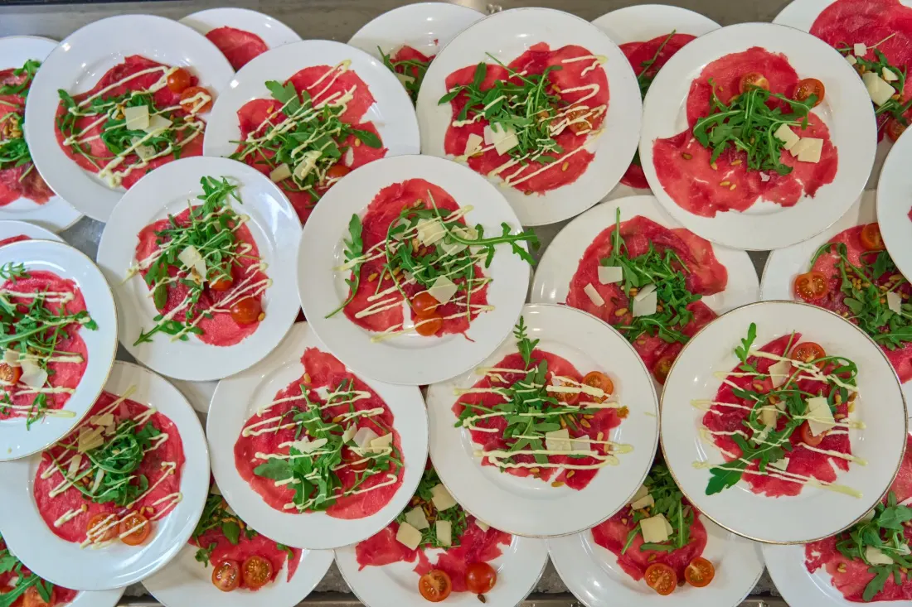
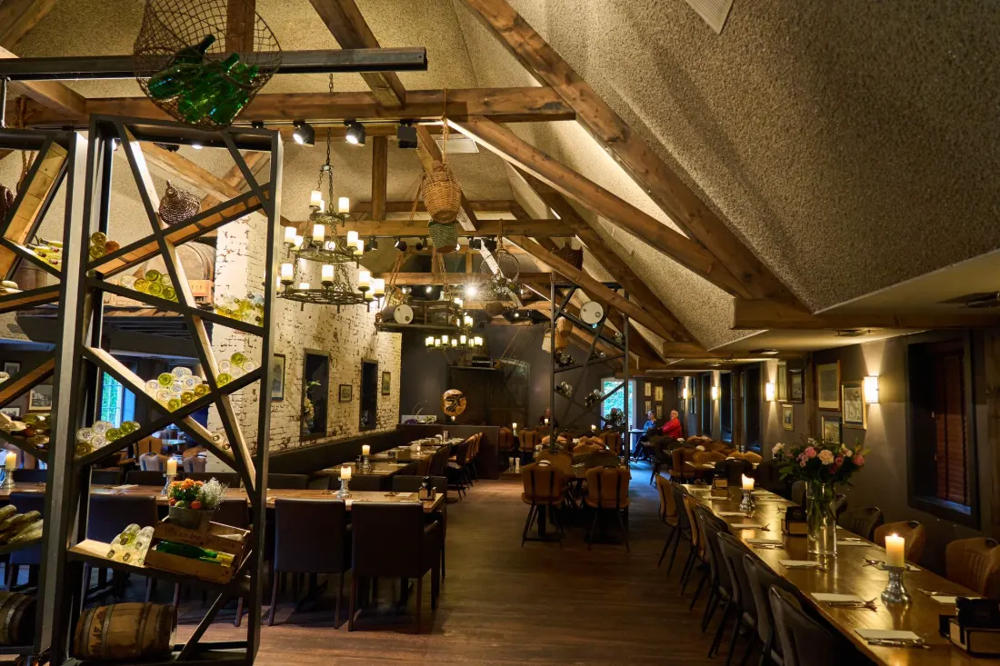
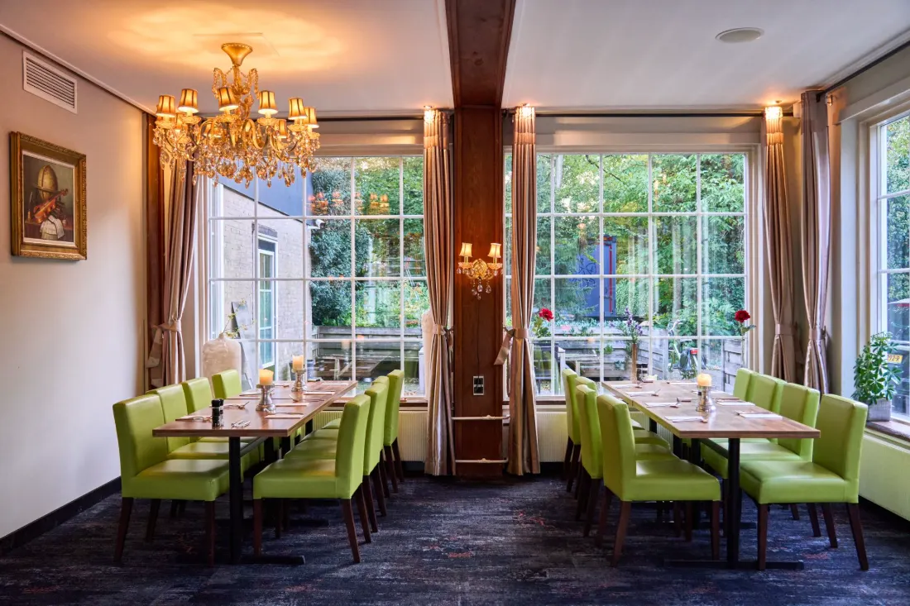
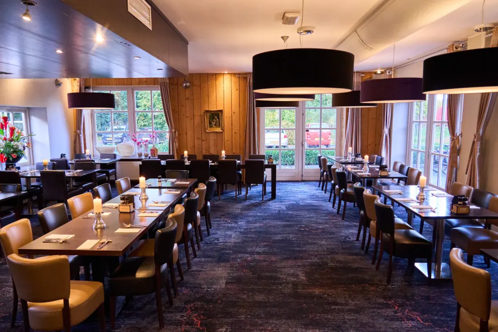
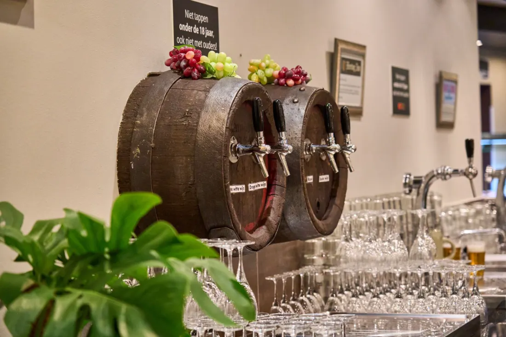

Maandag t/m donderdag
€ 41,50
p.p. · 2 uur arrangement
Wenum Wiesel · gemeente Apeldoorn
Sushi, live cooking wok, teppanyaki, grill en een dessertbuffet met chocoladefonteinen. Twee uur aan tafel voor een vaste prijs, inclusief huiswijn, tapbier, frisdrank, koffie, thee en slush.
Welkom
Wokken voor een vaste prijs? Bij Wok Sprengenhorst in Wenum Wiesel natuurlijk. In een prachtig pand, geheel nieuw ingericht en voorzien van alle gemak, schuift u aan in een van onze vier zalen. Buiten wacht een grote, geheel gratis parkeerplaats rondom het pand; binnen staan mooie, gebruiksvriendelijke buffetten met alles erop en eraan.
Met 400 zitplaatsen zijn we uitstekend geschikt voor grotere gezelschappen, of juist voor een avond met z'n tweetjes in een van de kleine zaaltjes. We nodigen u van harte uit om zelf te komen beoordelen.

Prijzen
Onbeperkt eten, frisdrank, koffie & thee, wijnen en bieren. Er wordt uitgegaan van een verblijf van 2 uur.
€ 41,50
p.p. · 2 uur arrangement
€ 43,50
p.p. · 2 uur arrangement
€ 3,00
per levensjaar · ma t/m zo
Onbeperkt eten, frisdrank, koffie & thee en toegang tot de speelruimte.
€ 43,50
p.p. · weekendtarief
* Met uitzondering van de kerstdagen.
Nieuwjaarsdag, Pasen, Koningsdag, Moederdag, Hemelvaartsdag, Pinksteren, Vaderdag, Sinterklaas, Ouderjaarsavond en Valentijnsdag. Voor Kerstavond en 1e en 2e Kerstdag gelden speciale tijden en tarieven, zie Kerst 2026.
Bij gebruik van een gereduceerd tarief kan om een legitimatiebewijs worden gevraagd. De weekdagprijzen gelden niet op feestdagen.
Het buffet
Loop zo vaak langs als u wilt. Dit staat er voor u klaar:
Verschillende soepen, met garneringen zoals stokbrood en kruidenboter.
Vers bereid door onze sushichef: vele soorten met vis, groenten en vlees.
Verse salades, carpaccio, gerookte zalm en rosbief.
Gerechten uit verschillende keukens, onder andere kip in gong bao saus, gestoofd rundvlees, groenten in knoflooksaus, bami, rijst, bitterballen en frikandellen.
Stel uw eigen gerecht samen met vlees, vis en groenten en laat het voor u wokken, met sauzen als knoflook, kerrie en zoetzuur.
Kip, eendenborst, zalm en gamba's. Onze specialiteit: ossenhaaspuntjes.
T-bone, lamsrack en biefstuk.
Kleine taartjes, spekkoek, crème brûlée, huisgemaakte tiramisu, vers fruit, ijs, slagroom en chocoladefonteinen.
Frietjes, pizzapuntjes, slush en een eigen speelruimte.
Vier zalen
Wok Sprengenhorst is verdeeld over vier verschillende zalen, allemaal nieuw ingericht en overal voorzien van airco en verwarming. Komt u met een groep of een bedrijfsuitje? Geef bij uw reservering gerust aan waar u het liefst zit; we houden er rekening mee waar het kan.
Reserveer online


Kerst 2026
€ 59,95 per persoon
€ 4,50 per leeftijdsjaar voor kinderen van 1 t/m 11 jaar
Andere acties en kortingen gelden niet tijdens de kerstdagen. Op Kerstavond (24 december) en Nieuwjaarsdag (1 januari) geldt het weekendtarief. Op 31 december zijn we gesloten.
16.00 - 18.30
16.15 - 18.45
16.30 - 19.00
19.00 - 21.30
19.15 - 21.45
19.30 - 22.00
Openingstijden
| Maandag | 17.00 - 22.00 |
|---|---|
| Dinsdag | geslotenbehalve op feestdagen |
| Woensdag | 17.00 - 22.00 |
| Donderdag | 17.00 - 22.00 |
| Vrijdag | 17.00 - 22.00 |
| Zaterdag | 16.00 - 22.00 |
| Zondag | 16.00 - 22.00 |
| Feestdagen | 16.00 - 22.00 |
Contact & route
7345 CM Wenum Wiesel
gemeente Apeldoorn
Route: Google Maps · Apple Kaarten
Cadeaubon
Cadeaubonnen zijn dagelijks van 13.00 tot 22.00 uur af te halen bij het restaurant. Een bon is een jaar na afgifte geldig, in één keer te besteden en niet inwisselbaar tegen contanten. We accepteren alleen onze eigen cadeaubonnen.

Veelgestelde vragen
Staat uw vraag er niet bij? Bel ons gerust vanaf 12.00 uur op 055 - 312 10 25.
Bij binnenkomst betaalt u het arrangement (2, 2,5 of 3 uur). Daarna gaat u naar uw tafel en kunt u onbeperkt eten en drinken. Apart afrekenen is niet mogelijk.
Ja, u kunt per half uur bijboeken. Geef dit aan bij uw reservering.
Bij de balie ligt een allergenenboekje. Kruisbesmetting kunnen we helaas niet uitsluiten.
De keuze is beperkt, maar er is wel wat: vegetarische sushi en salades, warme gerechten en de live cooking wok.
Nee, we serveren geen halal vlees.
U kunt uw voorkeur aangeven bij de reservering. We doen ons best, maar kunnen het niet beloven.
Vanaf 15 personen kan dat, tegen € 10 administratiekosten.
Nee, dinerbonnen accepteren we niet. Onze eigen cadeaubonnen natuurlijk wel.